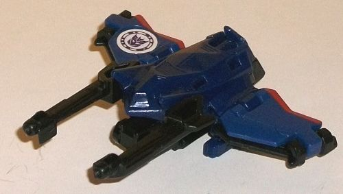
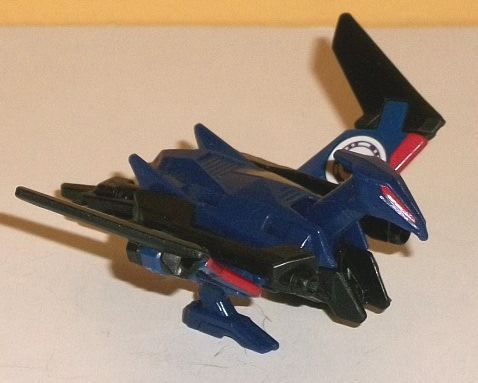
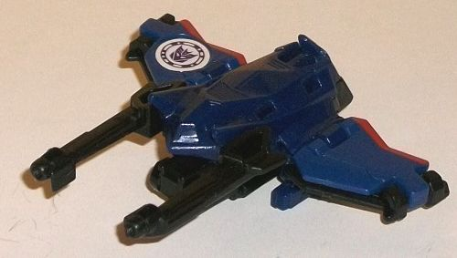
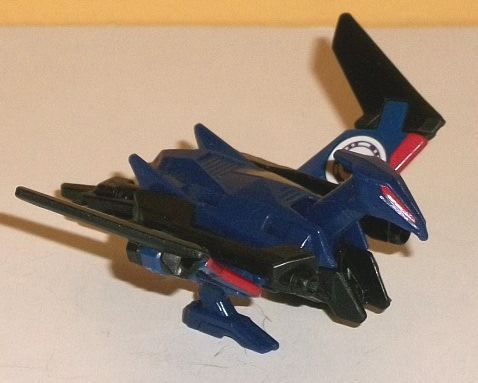
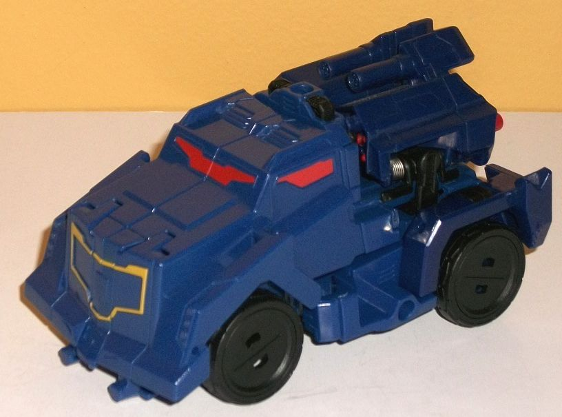
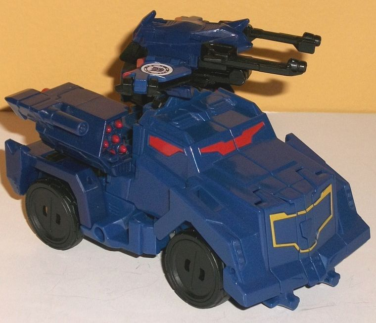
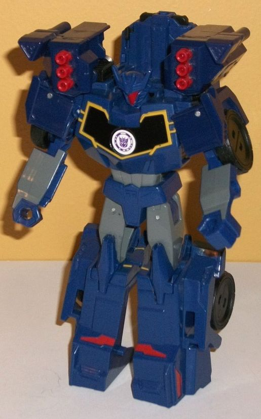

 
Size : Mini-Con
Difficulty of Transformation : Very Easy
Color Scheme : Dark navy blue, black, and some dark red
Individual Rating : 7.0
Allegiances
: Decepticon
 Laserbeak
Laserbeak


Size
: Mini-Con
Difficulty of Transformation
: Very
Easy
Color Scheme
: Dark navy blue, black,
and some dark red
Individual Rating
: 7.0
Laserbeak's alternate
mode is a "spacecraft" that looks an awful lot like a gun without a handle.
(And, of course, big surprise-- there's a handle at the bottom you can
flip out to have a larger TF hold him as a gun or he can serve as a gun
emplacement plugged into the top of Soundwave's alt mode!) Anyways, the
"spaceship" portion of this mode is pretty much exclusively the fact that
he was wings. There's two large guns on the front sides of the sloped body,
which has some detailing on the front that COULD be interpreted as a small
cockpit window-- if it was painted. As is, it just looks like some decorative
line detailing, which is also present in minor amounts on the wings, along
with some ridges. Each of the guns has a long, narrow barrel, looking like
Laserbeak is looking for some pinpoint accuracy. The bird kibble in this
mode is admirably minimal, but it's still there-- the most obvious being
the bird legs just sticking out the bottom a bit in this mode, along with
the black tail feathers somewhat ruining the steamlined look on the bottom
of the body. The bird head itself folds into the back end, the slightly-visible
eyes on it the only real obvious indication this is something more than
just the back end. The color scheme borrows heavily from Soundwave, with
Laserbeak being mostly a dark navy blue, with some black on the guns and
underside in this mode. The only paint readily visible in this mode are
red stripes on the back of the wings, which-- though appreciated-- really
needed to be more prevalent to help enhance the look of the mode more.
Laserbeak's transformation
is simple, but rather effective-- fold out little black ends on the wings
to elongate them, flip out the tailfeather piece from the bottom, and then
flip back the guns, which causes Laserbeak's head to pop up. The end result
is a darned cool-looking evil robot bird, which definitely is borrowing
much more heavily from his G1 design now than the "buncha wing shards"
look of his
Prime predecessor
. The head
has a very sleek styling to it (heck, the whole figure does, but especially
the head), with two long red eyes and no apparent mouth. (The eyes are
the only additional paint apps you get in this mode, sorry.) The legs obviously
aren't an extra in this mode, the wings look pretty cool with their longer
proportions, and the body is appropriately sloped for a condor, given that
he's turned around in direction from his gun/ship/gunship mode. The tailfeathers
hanging out the back end do look a little weak given that there's an handle
in the middle of them, but they still definitely make more sense in this
mode compared to just hanging out underneath the whole alt mode. Having
the twin guns flip around to rest on Laserbeak's shoulders was a really
good idea, and gives him some firepower in this mode. For articulation,
he can move his wings up-and-down at two points, and his neck up and down.
(Unfortunately his guns can't be posed without starting to transform him
back into alt mode.) It's pretty good for a little bird accessory this
small.
 Soundwave
Soundwave



Difficulty of Transformation
: Easy
Color Scheme
: Dark navy blue, dark
glossy gray, and some black, dark red, glossy black, and dull mustard yellow
Individual Rating
: 7.7
Soundwave's alternate
mode of a bulky armored vehicle could hardly be more different from his
Prime predecessor, but it still definitely looks like a Soundwave toy.
In this mode, he's got rather cartoony proportions (even for a RID2015
toy), with an extremely lare, bulky bottom half and front hood, and a relatively
tiny section where the driver would actually fit in (the cockpit windows),
along with some molded-in machine gun emplacements near the back end, which
aren't placed in this configuration on his other RID2015 toys. As far as
robot mode extras go, though, there's only a few minor ones-- his kneecaps
stick out a bit below the front bumper, and on the back end instead of
having stuff like headlights, an exhaust port, etc., there's his robot
shoulders and chest, with his head obviously folded down above said chest.
However, you're rarely going to look at this toy from the back end, making
the first extra a very small issue and the second a moderately bad issue
at worst. There's a decent amount of mold detailing in this mode, though--
like the small circular headlights on the sides of the front, the faux
"G1 chest replica" on the front bumper, and some mechanical angular lines
here and there, though particularly on the front half it's a bit smoother
than I'd expect from a semi-military vehicle. For colors, Soundwave is
mostly a dark navy blue as you'd expect, though his other colors are a
bit sparse. His wheels are black, of course, and there's a few other spots
of black like some minor connector parts and the buttons on the top of
this mode, but from most angles (i.e., not the back end, which I'll get
to during the robot mode review), all you can really see paint-wise to
break up all the blue are some dark red on his windows (which, again, are
tiny) and an outline of mustard yellow around his faux chest replica on
the front bumper. No headlights painted, or even the center of his grill,
which should be black... there's even a space for the Decepticon emblem
to be placed there, but there isn't one! The paint here is really lacking.
Pressing in on the two
black buttons on the top of this mode-- or inserting Laserbeak or another
Activator Mini-Con with their peg folded out-- will cause the back end
to pop open, revealing two fairly large missile launchers that flip out
to the sides. They don't actually fire missiles-- they're merely molded
in-- but what's super cool about this gimmick isn't the fact that there's
a couple of new weapons, but that these whole sections move back and forth
on the back end as you roll Soundwave along-- there's a rubbery fifth wheel
on the underside of this mode, and rolling it will make it look like he's
firing one launcher and then "reloading it" as the other fires. It's a
really cool, addicting gimmick and the best Activator gimmick in the line,
in my opinion. The only downside is that since the back end is more "open",
you can more obviously see the back of Soundwave's head with this gimmick
deployed.
Soundwave's transformation
is rather simple-- fold out the arms and shoulders from the rear sides,
flip down the whole front sections to become the legs, and then fold down
that front section below the back section on a hinge to connect the two
halves of the robot mode. Then just flip up the robot head and you're done.
As far as show accuracy, this definitely isn't the best RID2015 Soundwave
toy. He does have the accurate G1-homage chest that looks a bit like a
tape deck-- what with the black in the center surrounded by some mustard
yellow-- as well as a relatively trim stomach and waist, and very wide
shoulders with bulkier arms (though they're more square than they should
be, given the transformation). His legs are completely inaccurate, though,
simplified as they are into just being the whole front half of the alt
mode, split into two. The upper legs are pretty tiny proportionally compared
to those huge stompin' lower feet, though the kneecap details do help make
the "transition" look a bit better between the two leg sections, and he's
VERY stable with those huge feet. Soundwave also has his two cannons on
his shoulders, which of course isn't show-accurate, though it does give
him some beefed-up firepower in this mode, and since you're looking at
the opposite end of the cannons in this mode there's some different details
on them this time around. The fifth wheel in vehicle mode ends up behind
Soundwave's lower torso, which you can rotate some to get his shoulder
packs aligned in this mode. Because of the shoulder packs there's a big
section of plastic above his head, making him not have the best field of
view in this mode if he could actually look around, heh. His facesculpt
is well-done, but taken from the skinny Prime Soundwave, it still looks
very alien to the rest of this bulked-up toy. The color scheme is a bit
better broken-up in this mode, with the black chest and red on the face,
shoulder packs, and feet. Dark gray has been added a lot to this mode,
on the lower arms, uppper legs, and waist, and all this helps break up
the blue considerably more than in vehicle mode. There's a couple of added
details-- like the faux "button details" on his waist and some mechanical
details on the inside of his arms-- but largely he's still fairly sparse,
given how much is carried over from his vehicle mode. For articulation,
Soundwave can move outwards at the shoulders and back-and-forth at the
elbows and knees. (His hips can only move outwards a tiny amount-- just
enough to separate them, really). So he doesn't have great articulation--
a real shame, given the size of the toy and the fact that there's nothing
in the transformation preventing him from having considerably better articulation.
RID2015 Activator Soundwave
does have a few issues-- not enough paint in vehicle mode, fairly poor
articulation in robot mode, and a lack of show-accuracy in some robot mode
aspects in particular-- but Laserbeak is an awesome minion, and his Activator
gimmick is incredibly fun. Unless articulation matters more to you than
playability (in which case I'd recommend the
Warrior
),
I think this toy fits a nice mix of having a good number of features while
still having a decently good look to him. My favorite toy of RID2015 Soundwave,
and my favorite Activator Combiner to boot.
Reviews by Beastbot